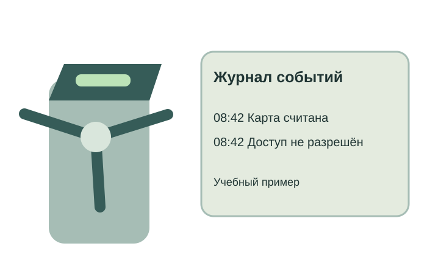
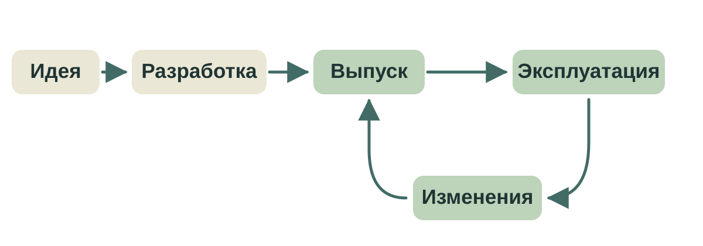
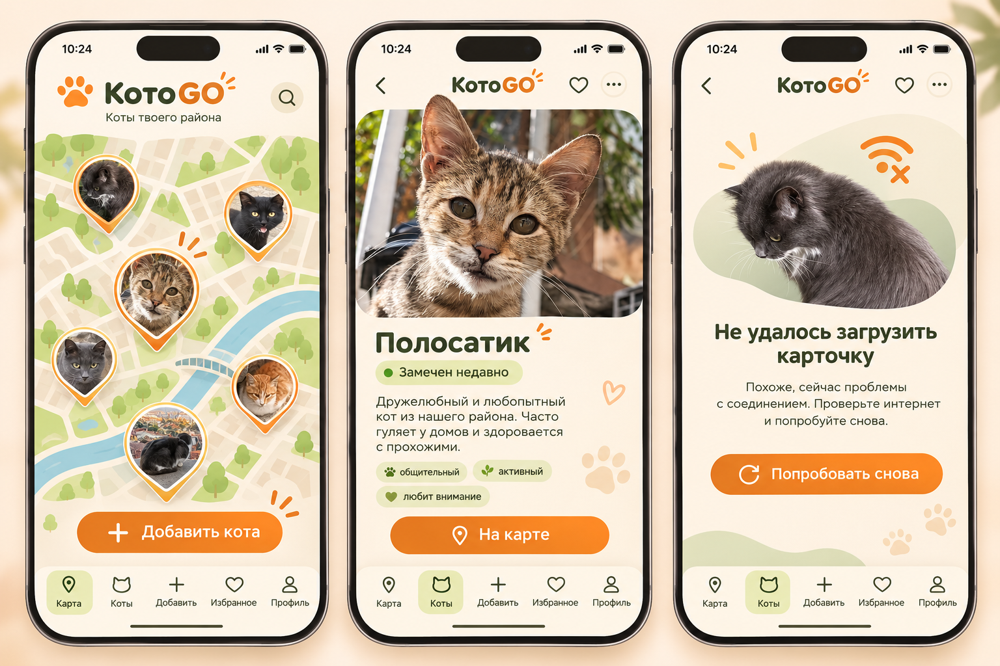
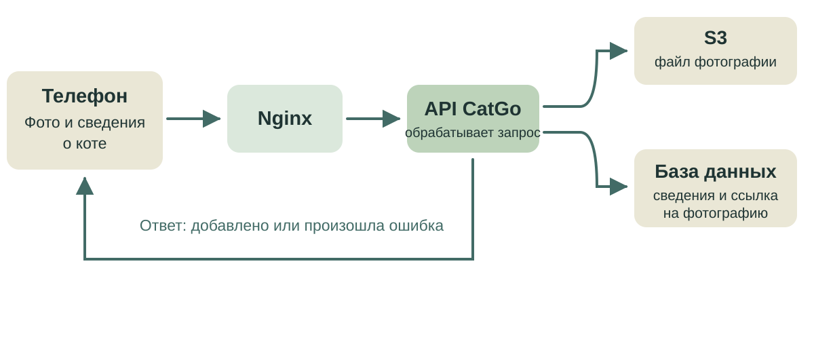
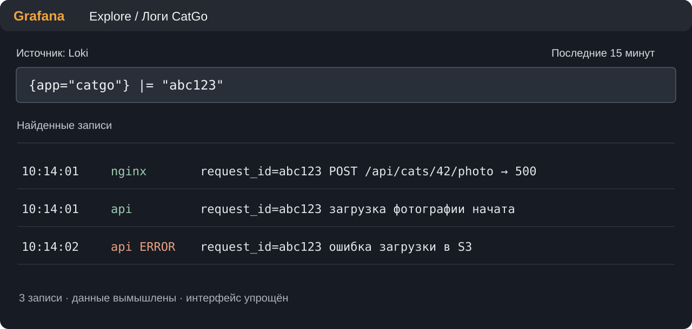
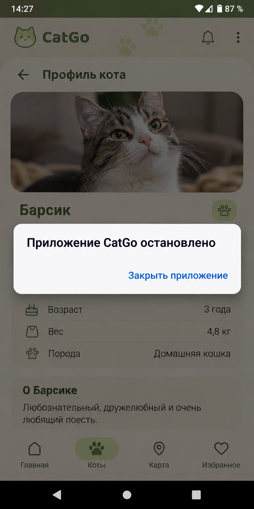
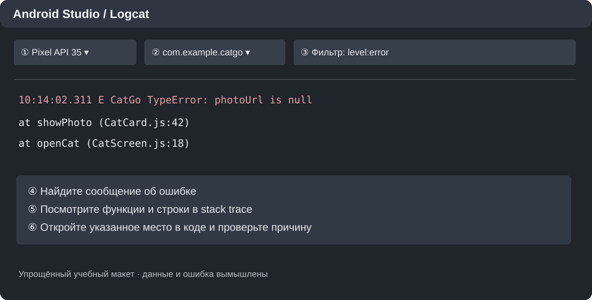

«У меня всё работает!»
Что происходит с приложением после выпуска?
Что происходит с приложением после выпуска?
В комнате пахнет. Кот смотрит невозмутимо.
Где искать причину?
| Шаг | Что выяснили |
|---|---|
| Симптом | В комнате пахнет |
| Поиск | Где источник? |
| Находка | Источник под ковром |
| Причина | Коту не открыли туалет |
| Предотвращение | Проверять дверь |

Турникет сломан? Что проверим дальше?
Вчера пропуск не сработал. А если человек обратится через неделю?
Ротация — создаём новый файл по времени или размеру.
Срок хранения — решаем, когда старые записи удалить или архивировать.
Как в видеорегистраторе: старые записи могут заменяться новыми.


Пользователь добавил кота, но фотография не загрузилась.
Что произошло?
«Фотография кота не появилась»
«Много ошибок загрузки фото»
О проблеме узнали. Как найти причину?

Пользователь фотографирует кота, добавляет сведения и нажимает «Сохранить».
10:14:01 Запрос получен
10:14:02 Начата загрузка фотографии
10:14:04 Ошибка загрузкиЖурнал содержит записанные события, а не всю историю программы.
{
"logger": "http.log.access",
"request": {"method": "POST", "uri": "/api/cats/42/photo"},
"status": 500,
"duration": 1.8
}Учебные данные · сокращённая запись · время в секундах
GET /wp-admin → 404
GET /.env → 404Попытка запроса — это уже взлом?
access.log запрос → 504
error.log upstream timed outОтвет пользователю и сообщение веб-сервера.
Получена фотография кота
Начата загрузка в хранилище
Не удалось загрузить фотографиюПриложение может знать то, чего не видит Nginx.
| Уровень | Пример |
|---|---|
| DEBUG | Подробности выполнения |
| INFO | Фотография получена |
| WARNING | Хранилище отвечает медленно |
| ERROR | Загрузка не удалась |
1. Nginx присваивает запросу идентификатор.
2. Передаёт его приложению в X-Request-ID.
3. Оба записывают его в свои журналы.
Nginx request_id=abc123 POST /api/cats/42/photo → 500
API request_id=abc123 ошибка загрузки в хранилищеОдин ID помогает найти записи об одном запросе.
grep 'ERROR' app.log
grep 'abc123' app.logПодсчитать события: awk → sort → uniq

Один поиск — записи разных компонентов.
Учебный макет · вымышленные данные

Сервер ответил успешно, но CatGo закрылось.
В журнале разработчика:
TypeError: photoUrl is null
at showPhoto (CatCard.js:42)
at openCat (CatScreen.js:18)Учебная иллюстрация и вымышленный stack trace

Выбираем устройство и приложение, фильтруем ошибки, читаем стек.
Учебный макет · вымышленная ошибка
Телефон → отчёт об ошибке → сервис → разработчик
Версия приложения · устройство · стек ошибки
Пароли и токены сессий
Полные номера карт и CVV
Email и другие личные данные — без необходимости
Журнал приложения → общий поиск → внешний сервис
Сохраняйте только то, что нужно для расследования.
Логи помогают понять, что проверять дальше.
Приложение живёт и после выпуска — за ним нужно следить.
Логи помогают найти свидетельства и связать их по Request ID.
На телефоне разработчику помогает Logcat и отчёт об ошибке.
Паролям, токенам и полным данным карт не место в обычных логах.
Заметили проблему → нашли свидетельства → проверили исправление.